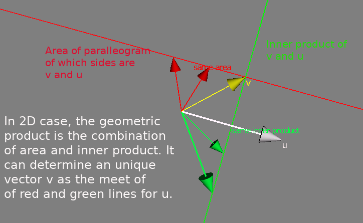
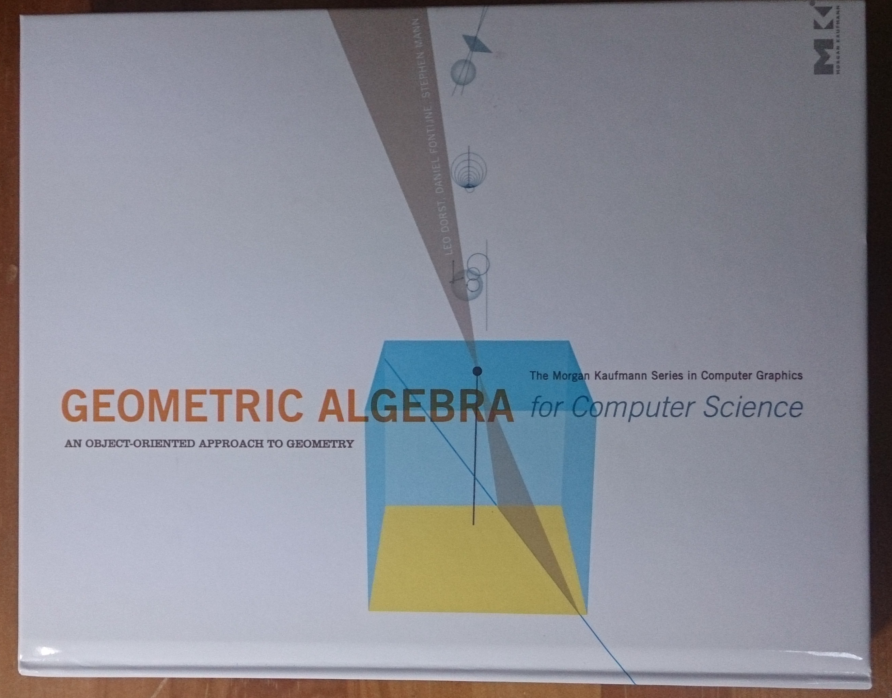

Geometric Algebra
This is an article for the book
"Geometric Algebra for Computer Science", Leo Dorst, Daniel Fontijne, Stephen Mann (ISBN 9780123749420)
which is one of the greatest book I've read. This is NOT a review or somesuch. I'm happy if I can report a tiny bit of flavor of this extraordinary fine book.
Geometric Algebra is the algebra of geometric objects. The algebra is based on geometric products. Although handling geometric product is not so simple, its concept is very simple and even primary.

We can generalize geometric product to higher dimension with extending area of palleogram to "k-blade" and inner product to "contraction". If u and v is vectors, u^v is 2-blade which is the area of palleogram made with u and v. If u,v and w is the 3D vectors, we get 3-blade u^v^w as the volume, and so on.
If a is a vector and u^v is a 2-blade, the left contraction a << u^v can be given with the sum (a.u)v - (a.v)u
Geometrically, a << u^v is "the most unlike part" of u^v against a. The left contraction can be generalized to the left contraction of type k-blade << n-blade.
These idea are fundamental and very powerful.
In "Geometric Algebra for Computer Science", full of fine examples of applications. The cover picture is for one of them. It shows the plane of rays generated by a line observed with a pin-hole cam A. This gray plane intersects the yellow image plane of the cam with the blue line.

Assume that the original line in 3-D space is the ray from some marker point to another cam B. It means that that marker can be seen from cam A somewhere on the blue line. This line L is called the "epipoler line".
With geometric algebra, you can get L with one liner:
L = dual(Pa ^ M ^ Pb) << IPa
using outer product ^, left contraction << and dual(), where Pa, Pb: camera positions, M: marker, IPa: image plane of A. Its right side can be read as "the meet of the plain IPa and the plain which is determined by Pa, Pb and M". Surprisingly simple. It's a line of a program for the motion capture. Please see Ch.14 of the book for detail.
The book is highly recommended if you are interested in geometric algebra. The minimal pre-requisites would be some fundamental geometrical concepts learned at primary school, low dimensional vectors and inner product at high school. Of course, if you are familiar with linear algebra, that's fine and will help you.